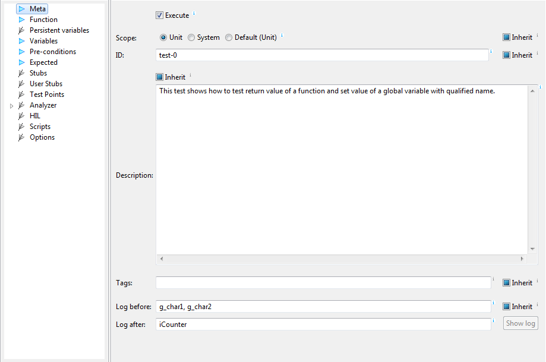

Meta
This section contains information, which describes the test case:
- Execute - if this check-box is not selected, the
test case will not execute. This can be useful, when test case
only provides information for derived tests cases.
- Scope - scope defines whether test case will test
single function (unit tests) or other part of the code
(from single line to complete system). See
also sections Functions and
Stop conditions for more info.
- ID - test ID. testIDEA does not require test
case ID to be specified, but it is highly recommended to use
this feature.
- Description - human readable description of the test
case.
- Result comment - This text refers to specific test
run. It is stored to results and report only, and will be lost
on next test run.
- Tags - tags can be used to filter test cases for
execution.
- Log before/after - expressions in log field Log before are
evaluated before the test starts, and expressions in log
field Log after are evaluated after test ends. Logged
values are written also to test report.

See tool-tips for additional details and examples.